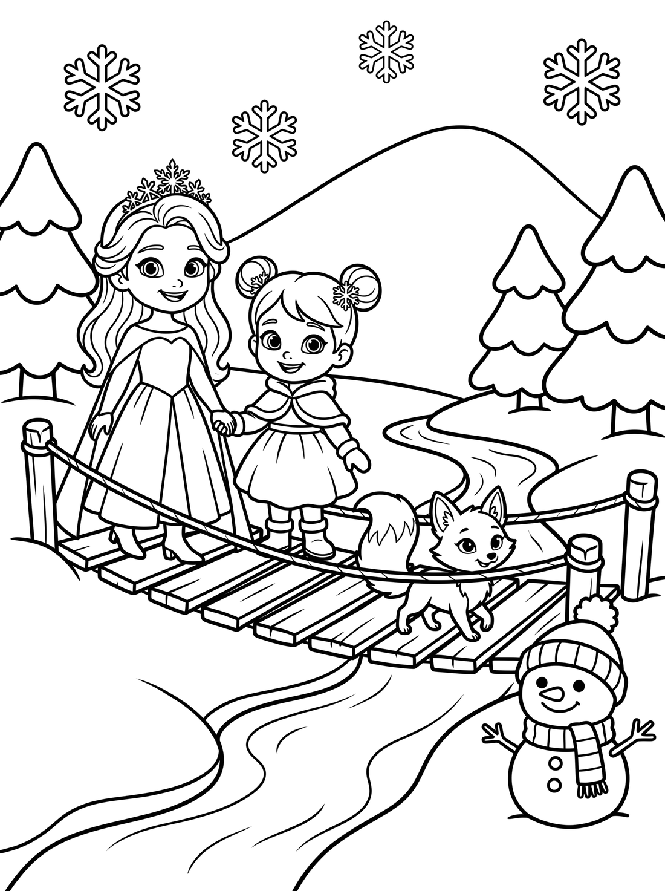
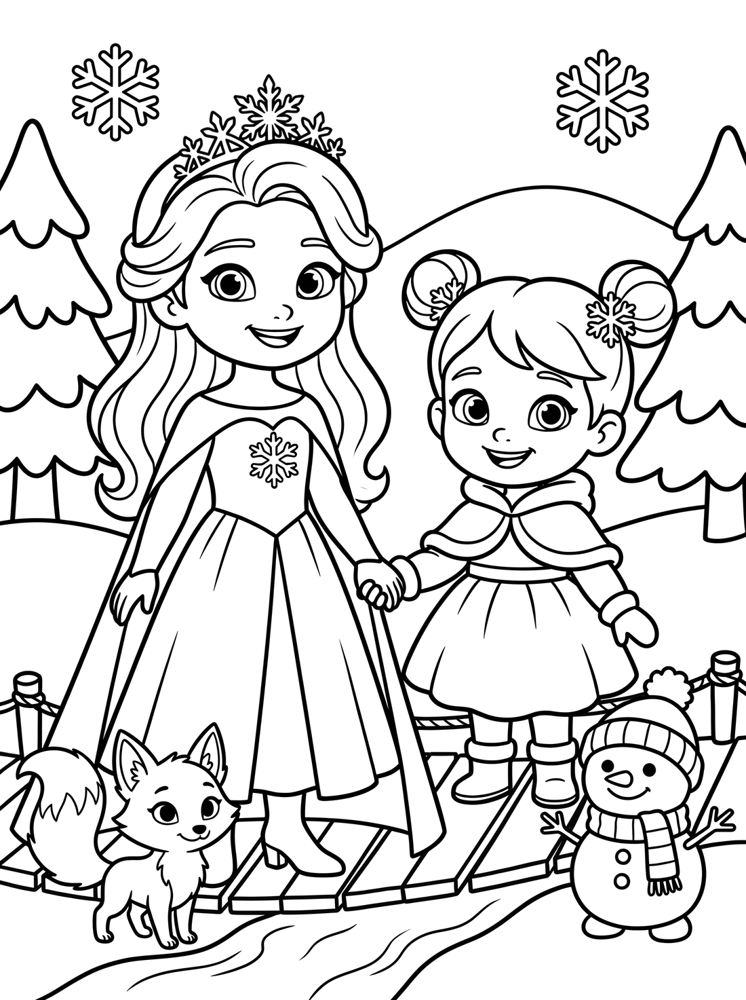

If this is the level, I’ll draw the other five pages (hill, wibbly, step, breath, we-did-it) to match — each with the crew and a simple scene at this density — and fix the page-1 eye colours (Ela → blue, Vita → browny-green) in the same pass. Or tell me to go simpler still or a touch busier.